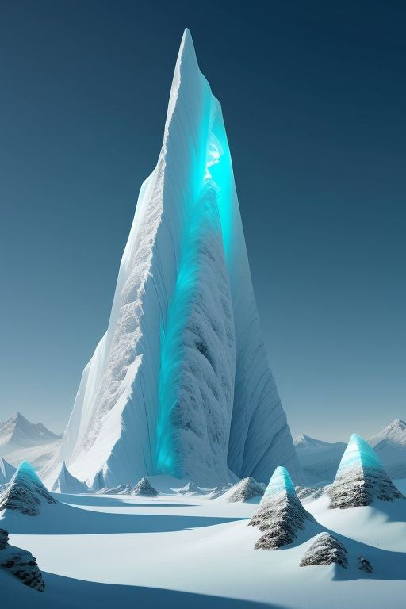

Xant‑Ω est un projet qui m'a semblé ne jamais pouvoir aboutir. Le nombre d'épreuves techniques à surmonter a entretenu "ma bulle", pendant plus de 10 ans. Au début, la résilience et la persévérance dont j'allais devoir faire preuve m'étaient alors inconnus. Mais entre la vie professionnelle, une vie sociale de plus en plus rare et des périodes de doutes de plus en plus fréquentes, "ma bulle" m'a bien aidé. Ce qui restait difficile cependant, était de devoir imposer ça à mes proches et voir de déliter mon tissu social. C'est pourquoi je voudrais remercier ceux qui m'ont aider à surmonter... BLABLABLA Le mélodrame n'intéresse personne. À tous les testeurs qui ont bravé les premières versions instables, qui ont affronté les mécaniques bancales, qui ont débattu avec ma tête de mule, qui ont proposé et débugué : merci. Votre énergie a façonné ce monde. La lutte de Xant contre les corporatiste va pouvoir exister. Vos histoires dans ce monde seront dès lors des fragments de cet univers qui m'a demandé tant de passion. Merci pour votre patience, votre passion, vos retours, vos critiques précieuses et pour chaque instant passé avec moi sur Xant‑Ω.